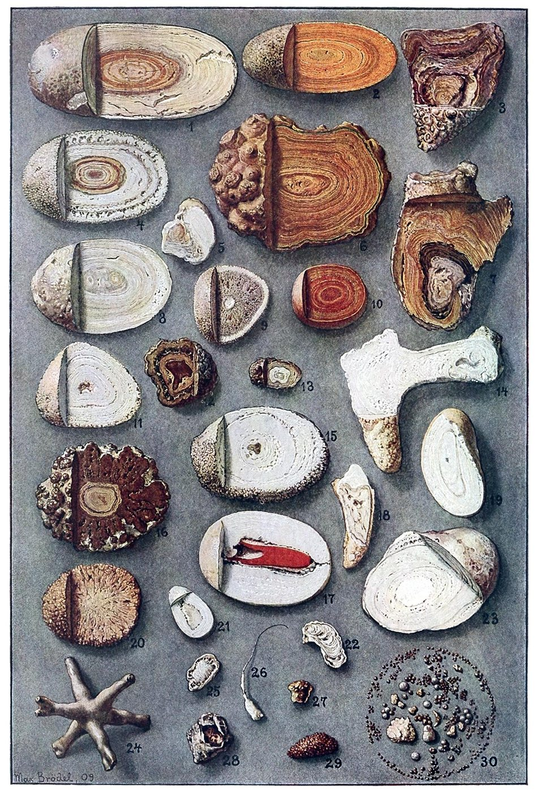

Qué es en realidad un cálculo renal, y por qué se forma
10 DE SEPTIEMBRE DE 2026

Quería entender los cálculos renales desde el principio, y el principio resultó ser una pregunta que en realidad nunca me había hecho: ¿qué es un cálculo renal — una «piedra en el riñón» — y por qué se forma? No «cómo evito tener uno» — eso es la siguiente entrada, y tiene una respuesta menos zanjada de lo que sugiere el consejo habitual —, sino la cosa en sí. Es un objeto bastante común. En Estados Unidos, alrededor de un adulto de cada once ha tenido uno [1] — una cifra que se ha triplicado, más o menos, desde 1980 [3] —, y en los años más recientes de la encuesta nacional cerca del 11 % de los adultos declaraba haber tenido alguno y el 2,1 % haber expulsado uno en los doce meses anteriores [2]. Los hombres siguen formando más que las mujeres, pero la diferencia lleva una década cerrándose [3]. Así que: ¿qué es?
¿De qué está hecho un cálculo renal?
Un cálculo renal es un bulto duro de cristales, unidos por una pequeña cantidad de proteína, que se formó dentro del riñón a partir de sustancias que normalmente van disueltas en la orina. Puede tener el tamaño de un grano de arena o llenar por completo el interior ramificado del riñón como un molde — el «cálculo coraliforme», con forma de coral, abajo a la izquierda de la lámina de arriba. Si se corta uno por la mitad tiene anillos, porque un cálculo crece por capas alrededor de aquello sobre lo que empezó. Brödel pintó esos anillos en 1909, y son la cosa más útil que se puede saber de un cálculo: no es algo que aparece, es algo que se acumula.
De qué se acumula depende de la persona. El recuento moderno más grande que he encontrado es el del laboratorio de la Clínica Mayo, que analizó el primer cálculo enviado por cada uno de 43.545 pacientes en un solo año [4]:
- Oxalato cálcico — 67 %. El cálculo corriente. El calcio y el oxalato (un pequeño ácido orgánico que fabrica el hígado y que también está en los alimentos) se unen en un cristal casi insoluble en agua.
- Fosfato cálcico (hidroxiapatita) — 16 %. El mismo mineral que el hueso; prefiere la orina alcalina.
- Ácido úrico — 8 %. El producto de desecho del metabolismo de las purinas, la misma molécula que está detrás de la gota. Necesita una orina ácida para cristalizar, y ahí está toda la historia de quién los forma (más abajo).
- Estruvita — 3 %. Fosfato amónico magnésico, fabricado por ciertas bacterias durante una infección urinaria. Son los que crecen hasta convertirse en cálculos coraliformes.
- Brushita — 0,9 % (otro fosfato cálcico) y cistina — 0,35 % (un defecto hereditario en el transporte de aminoácidos).
De aquí se siguen dos cosas. La primera: «cálculo renal» es en realidad «cálculo de calcio» nueve de cada diez veces — entre las personas que formaban su primer cálculo en un condado de Minnesota, el 93,5 % formó un cálculo de calcio de uno u otro tipo [5]. Los manuales antiguos situaban la estruvita en torno al 10 % [6]; ha bajado a medida que las infecciones urinarias se tratan antes. La segunda: el tipo importa para lo que viene después: en ese mismo condado, la probabilidad a diez años de un segundo cálculo sintomático fue de alrededor del 30 % para los de oxalato cálcico y fosfato cálcico, pero de alrededor del 50 % para los de brushita, estruvita y ácido úrico [5]. No se puede razonar sobre el propio cálculo hasta saber cuál es el que uno forma — por eso la guía clínica dice que se analice al menos una vez [7], y por eso yo lo guardaría.
¿Por qué se forman los cálculos renales?
La orina es una disolución extraña. Lleva calcio, oxalato, fosfato y ácido úrico en concentraciones que ya estarían cristalizando si se disolvieran las mismas cantidades en agua corriente — está sobresaturada, la mayor parte del tiempo, en la mayoría de las personas [6]. Se mantiene líquida porque el riñón también le añade inhibidores: citrato, que atrapa el calcio antes de que pueda hacerlo el oxalato; magnesio; y un conjunto de proteínas que recubren cualquier cristal que empiece a formarse y le impiden crecer. Un cálculo es lo que se obtiene cuando, en un riñón, la sobresaturación desborda la inhibición durante el tiempo suficiente.
Eso requiere cuatro pasos, y el último es el que importa. Los cristales nuclean; crecen; se agregan en grumos; y después tienen que quedar retenidos. Un cristal que sale arrastrado con la orina nunca fue un cálculo — la mayoría expulsamos cristales microscópicos habitualmente. Algo tiene que sujetarlo en su sitio el tiempo suficiente para que las capas se vayan formando. Para el cálculo corriente de oxalato cálcico, ese algo tiene nombre y descubridor.
La placa de Randall
En los años treinta, Alexander Randall observó pequeños depósitos blancos de fosfato cálcico en las puntas de las papilas renales — los puntos donde los conductos colectores del riñón se abren al espacio lleno de orina — y propuso que los cálculos crecían sobre ellos. Se tardó setenta años en demostrar cómo. En 2003, un grupo de la Universidad de Indiana tomó biopsias de la papila a personas con cálculos de calcio durante la cirugía y siguió los depósitos hasta su origen: empiezan en la membrana basal de las ramas delgadas del asa de Henle, en lo profundo de la médula renal, y se extienden hacia fuera por el tejido hasta quedar justo debajo del revestimiento de la papila [8]. Donde ese revestimiento se erosiona, la placa queda expuesta a la orina, y el oxalato cálcico — para el que la orina ya está sobresaturada — crece sobre ella. Los cálculos extraídos en cirugía se encuentran a menudo todavía adheridos, con un pequeño hoyuelo en una cara, donde estuvieron asentados sobre la papila. Las personas sin cálculos biopsiadas en ese mismo estudio no tenían placa alguna.
Por qué se forma la placa no está resuelto. El cuadro actual es que se parece más a la calcificación de una arteria que a una piedra en una tubería: los depósitos se asientan en una matriz orgánica con las mismas proteínas que aparecen en la calcificación vascular, y el tejido que los rodea lleva las marcas de la inflamación y del estrés oxidativo [9]. Un cálculo, según esta lectura, es el producto final de una lesión lenta en lo profundo del riñón, no un simple precipitado — que es una de las razones por las que los remedios caseros de «disuélvalo con X» para los cálculos de calcio nunca han funcionado.
¿Quién forma cálculos renales, y por qué?
Todo lo que aumenta la sobresaturación, o reduce la inhibición, o mantiene un cristal más tiempo en el riñón, aumenta el riesgo. La lista es larga; los factores que tienen cifras reales detrás son estos.
Poca orina
El más importante de todos. La concentración es cantidad dividida por volumen, y quienes forman cálculos producen menos orina. En el ensayo italiano que estableció este punto, los hombres que llegaban con su primer cálculo de calcio orinaban alrededor de 1,06 litros al día frente a 1,40 en los controles, y las mujeres alrededor de 0,99 frente a 1,24 [10]. En tres grandes cohortes estadounidenses que sumaban 192.126 personas, la baja ingesta de líquidos explicaba, según las estimaciones, el 26 % de todos los primeros cálculos — más que cualquier otro factor modificable —, y cinco de esos factores juntos (líquidos, peso corporal, patrón de dieta, calcio de la dieta, bebidas azucaradas) explicaban más de la mitad [11]. Si decirle a la gente que beba más previene realmente los cálculos es una pregunta distinta de si el poco volumen los causa, y es el tema de la siguiente entrada, porque un gran ensayo de 2026 dio una respuesta que me sorprendió.
Demasiado calcio en la orina — y la trampa de la solución obvia
Un calcio urinario alto es la anomalía medible más frecuente en quienes forman cálculos de calcio [6]. La respuesta intuitiva, y el consejo médico estándar hasta los años noventa, era comer menos calcio. Resultó ser exactamente al revés, y la evidencia de ello está entre las más limpias de todo el tema.
Primero las cohortes. En 45.619 hombres seguidos durante cuatro años, quienes comían más calcio en la dieta tenían un riesgo menor de un primer cálculo que quienes comían menos [12]. En 91.731 mujeres seguidas durante doce años, con 864 cálculos, el quinto con mayor ingesta de calcio dietético tenía un 35 % menos de riesgo que el quinto con menor ingesta — mientras que el calcio tomado como suplemento, por su cuenta, se asociaba a un riesgo un 20 % mayor, y una ingesta alta de sodio a uno un 30 % mayor [13].
Después el ensayo. Borghi y sus colegas asignaron al azar a 120 hombres con cálculos recurrentes de oxalato cálcico y calcio urinario alto a la dieta tradicional baja en calcio, o bien a una dieta con calcio normal (unos 1.200 mg al día) pero con restricción de sal y de proteína animal, y los siguieron durante cinco años. Con la dieta baja en calcio recayeron 23 de 60 (el 38 %); con la dieta de calcio normal, poca sal y poca proteína, 12 de 60 (el 20 %) — un riesgo relativo de 0,49 [14]. El calcio urinario bajó por igual en los dos grupos. Lo que difirió fue el oxalato: subió con la dieta baja en calcio y bajó con la otra. El mecanismo está en el intestino. El calcio que se come con una comida se une al oxalato de esa comida, de modo que sale con las heces en lugar de absorberse y excretarse por la orina; si se quita el calcio, el oxalato pasa de largo. Por eso, además, el calcio en suplemento, tragado entre comidas sin nada a lo que unirse, se comporta de forma distinta que el calcio de los alimentos.
La sal es la otra palanca sobre el calcio urinario: el riñón maneja el sodio y el calcio juntos, y cuanto más sodio excreta, más calcio se va con él. En un ensayo de tres meses con 210 personas con cálculos, una dieta baja en sal redujo el calcio urinario de 361 a 271 mg al día y lo devolvió al rango normal en el 62 % de los pacientes, frente al 34 % con agua sola [15]. El consejo actual de la guía estadounidense para quienes forman cálculos de calcio y tienen el calcio urinario alto es, en consecuencia, 1.000–1.200 mg al día de calcio en la dieta, con el sodio limitado [7] — no menos calcio, sino menos sal.
Oxalato, citrato y la acidez de la orina
El oxalato viene de los alimentos — espinacas, ruibarbo, almendras, remolacha, chocolate y té son los famosos — y del propio metabolismo del hígado, y cualquiera de las dos fuentes puede dispararse. El citrato es el principal inhibidor y baja cuando el cuerpo está manejando una carga de ácido, que es lo que produce una dieta con mucha proteína animal. Y el pH de la orina decide qué cristal puede formarse siquiera: el fosfato cálcico la necesita alcalina; el ácido úrico, ácida. Cada uno de estos merece su propia entrada; aquí son, simplemente, los otros tres mandos.
Peso corporal, diabetes y ácido úrico
En esas mismas tres cohortes — 4.827 cálculos a lo largo de 46 años combinados de seguimiento —, los hombres de más de 100 kg tuvieron un 44 % más de cálculos que los de menos de 68 kg, y las mujeres de más peso aproximadamente un 90 % más, una vez ajustado por dieta y líquidos [16]. Parte de la razón es específica del ácido úrico. La resistencia a la insulina merma la capacidad del riñón para excretar amonio, que es lo que normalmente amortigua el ácido en la orina; la orina se vuelve inusualmente ácida, y el ácido úrico — que se mantiene disuelto a un pH de 6,5 y en gran medida deja de hacerlo a 5,3 — sale de la disolución. Trece personas con cálculos recurrentes de ácido úrico sometidas a un estudio formal de pinza de insulina eran gravemente resistentes a la insulina, y en voluntarios sanos la infusión de insulina elevó el pH urinario de 6,1 a 6,8 [17]. Por eso los cálculos de ácido úrico se agrupan con la obesidad y la diabetes, y por eso después de los 55 años superan al fosfato cálcico como segundo tipo más frecuente [4].
La familia
En 37.999 hombres seguidos durante ocho años, los antecedentes familiares de cálculos conllevaban un riesgo relativo de 2,57 (IC del 95 %: 2,19–3,02), tras ajustar por la dieta y todo lo demás medido [18]. Parte de eso son cocinas compartidas, pero no todo: el manejo del calcio en la orina es heredable, y las raras enfermedades litiásicas de un solo gen (cistinuria, hiperoxaluria primaria) se transmiten en las familias sin más.
El calor
El sudor es agua que no llegó a ser orina. El laboratorio de la Clínica Mayo recibió más cálculos de oxalato cálcico y de ácido úrico en julio y agosto que en cualquier otro mes [4]; al sur de Estados Unidos se le llama desde hace mucho el «cinturón de los cálculos»; y un análisis de 2008 proyectó que un clima más cálido empujaría la zona de alto riesgo hacia el norte — del 40 % de la población estadounidense viviendo en ella en 2000 al 56 % en 2050 —, añadiendo entre 1,6 y 2,2 millones de casos de cálculos a lo largo de la vida para mediados de siglo [19]. Un modelo, no una medición — pero la señal estacional que hay debajo es real.
La infección
Ciertas bacterias — Proteus por encima de todas — llevan una enzima que rompe la urea en amoniaco. Eso hace subir el pH de la orina y la inunda de amonio, y el fosfato amónico magnésico (estruvita) cristaliza en masa. Son los cálculos que llenan todo el interior del riñón, y son una enfermedad distinta: las bacterias viven dentro del cálculo, así que no puede tratarse sin extraerlo.
¿Qué probabilidad hay de un segundo cálculo renal?
Menos de la que dicen los manuales antiguos, y más de la que supone la mayoría de quienes tienen el primero. Las cifras clásicas — el 35 % a los cinco años, el 52 % a los diez [20] — salían de las consultas especializadas en cálculos, que ven a la gente que vuelve una y otra vez. Cuando el grupo de la Clínica Mayo siguió, en cambio, a todos los adultos del condado de Olmsted, en Minnesota, con un primer cálculo sintomático desde 1984 (2.239 personas), la tasa de un segundo episodio sintomático fue del 11 % a los dos años, el 20 % a los cinco, el 31 % a los diez y el 39 % a los quince [21]. Y se acumula: la tasa de recurrencia por cada cien personas-año fue de 3,4 después de un primer cálculo, 7,1 después de un segundo, 12,1 después de un tercero y 17,6 después de un cuarto [22]. Y esos son cálculos sintomáticos; cuando el mismo grupo hizo un TAC cinco años después a quienes habían tenido el primero, se había formado un cálculo nuevo en el 35 % de ellos, y alguna manifestación de recurrencia — cálculo nuevo, crecimiento o expulsión — estaba presente en el 67 % [23]. La mayoría de los cálculos nunca avisan.
Entonces, ¿qué dice en realidad un primer cálculo?
No mucho, por sí solo — que es la respuesta honesta, y la de la guía clínica. La evaluación de la Asociación Americana de Urología para un primer cálculo es una historia clínica detallada, una analítica de sangre y un análisis de orina; un análisis del cálculo al menos una vez siempre que pueda recogerse; y una recogida de orina de 24 horas — en la que se miden volumen, pH, calcio, oxalato, ácido úrico, citrato, sodio, potasio y creatinina — para quienes forman cálculos de forma recurrente y para quienes tienen el primero y están en alto riesgo o interesados [7]. Esa última expresión es la puerta. La orina de 24 horas es la única prueba que dice cuál de los mandos de arriba está subido en el riñón de cada uno, y cada recomendación de la siguiente entrada depende de cuál sea.
Qué dice la evidencia. Un cálculo renal es un agregado de cristales en capas que salió de una orina sobresaturada y se quedó en el riñón el tiempo suficiente para crecer — dos tercios de ellos de oxalato cálcico, la mayoría de esos sembrados sobre una placa de fosfato cálcico que empieza en lo profundo del asa de Henle. Lo que convierte la sobresaturación en cálculo es sobre todo el volumen de orina, el calcio urinario (que la sal sube y que el calcio de la dieta, contra la intuición, baja), el oxalato, el citrato y el pH — con el peso corporal, la resistencia a la insulina, los antecedentes familiares, el calor y la infección empujando cada uno sobre uno o más de esos mandos. Después de un primer cálculo sintomático, más o menos una persona de cada cinco tiene otro en cinco años y una de cada tres en diez, y el tipo de cálculo cambia esas probabilidades en casi la mitad. El tipo puede conocerse — por el propio cálculo y por una orina de 24 horas — y nada de lo que viene después tiene sentido sin él. El agua dura no causa cálculos y una destiladora no los evitaría; una pastilla de calcio eleva el riesgo en alrededor de una sexta parte a lo largo de siete años, sobre todo cuando se toma sin comida, y la vitamina C en dosis altas lo eleva más, en los hombres.
Qué haría yo. El juicio de una persona, no una recomendación. Si alguna vez saliera de mí un cálculo, lo guardaría y lo haría analizar — la guía lo pide de todos modos, y la diferencia entre un cálculo de oxalato cálcico y uno de ácido úrico es la diferencia entre dos problemas distintos. Y me tomaría al pie de la letra el «o interesados» de la guía y pediría la orina de 24 horas después de un primer cálculo en vez de esperar a un segundo, porque toda la literatura sobre prevención está ordenada según lo que encuentra esa prueba.
Posdata: tres preguntas sobre el agua y las pastillas
Tres preguntas llegaron en cuanto lo anterior estuvo escrito, y resultan ser la misma pregunta con tres disfraces: ¿el calcio que uno bebe, o se traga, se convierte en el calcio de un cálculo? Merecen respuestas propias, porque la respuesta intuitiva a las tres es que sí y la respuesta medida es, sobre todo, que no.
¿La gente de las zonas de agua dura forma más cálculos renales?
El agua dura es agua que lleva disueltos calcio y magnesio; la intuición es que beber calcio produce cálculos de calcio. La intuición lleva cuarenta años poniéndose a prueba, y falla. En 1982, un estudio con 2.295 pacientes comparó las Carolinas — agua blanda, una de las tasas de cálculos más altas del país — con las Montañas Rocosas, agua dura y una de las más bajas; en el conjunto de Estados Unidos, señalaban los autores, la dureza del agua y las tasas de cálculos van en direcciones opuestas, y comparar a pacientes con cálculos con pacientes de hernia de las mismas localidades no encontró diferencia alguna en el calcio, el magnesio ni el sodio de su agua del grifo [24]. (La única señal que sí encontraron: los usuarios de pozos privados tenían alrededor de 1,5 veces el riesgo — los minerales de esos pozos no eran el motivo, y nadie ha demostrado desde entonces cuál era). En 2002, una consulta especializada emparejó a 4.833 personas con cálculos de calcio con la dureza de su agua pública según el código postal: los pacientes del décimo más blando habían formado 3,4 cálculos cada uno a lo largo de su vida, los del décimo más duro 3,0 — menos, no más —, y el calcio urinario sí subía con el agua más dura, pero también subían el magnesio y el citrato urinarios, los dos inhibidores [25]. La mirada más amplia y más reciente es la del UK Biobank: 288.041 personas sin cálculos previos, seguidas de forma prospectiva, 3.298 primeros cálculos. La dureza del agua y el calcio del agua no tuvieron ninguna asociación con los cálculos en conjunto; el magnesio del agua sí — las personas del cuartil más alto (por encima de 5 mg/l) tuvieron un 12 % menos de cálculos —, y la única nota discordante es un hallazgo en subgrupos según el cual el agua dura conllevaba entre un 18 % y un 34 % más de riesgo en las mujeres y en los mayores de 60 años, algo que conviene vigilar pero que es el tipo de resultado que aparece en una cohorte y no en la siguiente [26].
¿Por qué el calcio del agua no se comporta como el calcio de un suplemento? En parte sí lo hace: en un ensayo cruzado, 18 personas con cálculos que bebieron dos litros al día de agua embotellada muy dura (255 mg de calcio por litro) entre comidas elevaron su calcio urinario alrededor de la mitad en comparación con el agua blanda, sin cambios en el oxalato [27] — el mismo efecto de «calcio sin nada a lo que unirse» al que vuelve más abajo la sección sobre los suplementos. Pero las cantidades son pequeñas (véase la pregunta de la destiladora), y el agua dura trae magnesio y bicarbonato junto con el calcio, y ambos hacen subir el citrato urinario. Una revisión sistemática de 2020 de tres décadas de esta literatura concluyó que el agua dura y el agua mineral rica en calcio son, si acaso, ligeramente beneficiosas para quienes forman cálculos de calcio [28]. Respuesta corta: no. El cinturón de los cálculos de Estados Unidos es una región de agua blanda.
¿Una destiladora de agua evitaría los cálculos renales — y qué porcentaje de ellos?
Busqué el ensayo y no existe: nadie ha asignado al azar a la gente a beber agua destilada o de ósmosis inversa y ha contado los cálculos, así que el porcentaje honesto es no medido. Lo que sí se ha medido me permite estimarlo, y la estimación es cercana a cero.
Empecemos por cuánto calcio quita realmente una destiladora. En el conjunto del UK Biobank, el agua del grifo media llevaba 53 mg de calcio por litro [26] — dos litros al día son unos 105 mg, una décima parte de los 1.000–1.200 mg que la guía quiere que coma una persona que forma cálculos de calcio [7]. Incluso un agua genuinamente dura, de 100–150 mg por litro, da 200–300 mg al día en dos litros, más o menos un vaso de leche. Una destiladora quita eso, y nada más que importe. Preguntémonos después si ese calcio estaba haciendo daño: en la población, no — ninguna asociación en 288.000 personas, ligeramente menos cálculos con agua más dura en 4.833 personas con cálculos —, y la destiladora elimina también el magnesio, el único mineral del agua con una asociación protectora medible [26]. El único escenario en el que destilar podría ayudar de forma plausible es el de una persona con calcio urinario alto que bebe mucha agua muy dura entre comidas, a la luz de esa subida del 50 % en el ensayo cruzado [27] — e incluso ahí la palanca es más pequeña que la de la sal, que movió el calcio urinario de 361 a 271 mg al día [15], y nadie ha demostrado que cambie los cálculos.
Lo que una destiladora no puede cambiar es el número de litros, y el número de litros es toda la partida: la baja ingesta de líquidos explica, según las estimaciones, el 26 % de los primeros cálculos [11], frente a un efecto de los minerales indistinguible de cero. Si tener una hace que alguien beba más agua, entonces previno cálculos — por el volumen, no por la pureza. Respuesta corta: un porcentaje que no puedo dar porque nadie lo ha medido; según lo que sí se ha medido, cercano a nada; y el número que sí importa es cuánta agua sale del grifo, no qué se le quitó.
¿Los suplementos de calcio y de minerales provocan cálculos renales con los años?
Esta es, de las tres, aquella en la que la intuición acierta en parte, y hay un ensayo aleatorizado como es debido para decir en cuánto. La Women's Health Initiative dio a 36.282 mujeres posmenopáusicas o bien 1.000 mg al día de calcio elemental en forma de carbonato cálcico — la forma de la mayoría de los suplementos de supermercado y de los antiácidos — con 400 UI de vitamina D3, o bien placebo, durante una media de siete años. Declararon cálculos 449 mujeres con el suplemento y 381 con placebo — un cociente de riesgos (hazard ratio) de 1,17 (IC del 95 %: 1,02–1,34) [29] [30]. En términos absolutos, eso es un 2,5 % frente a un 2,1 %: alrededor de un cálculo de más por cada 270 mujeres que tomaron la pastilla durante siete años. Real, y pequeño. La cohorte de las enfermeras había encontrado la misma dirección una década antes — calcio en suplemento, RR 1,20 — y observó que dos tercios de las mujeres que lo tomaban lo hacían fuera de las comidas o con comidas que tenían poco oxalato al que unirse [13].
Ese momento de la toma es el mecanismo, y se ha puesto a prueba directamente. Treinta y dos hombres sanos tomaron tres gramos de carbonato cálcico al día (unos 1.200 mg de calcio) durante una semana, o bien un gramo con cada comida, o bien toda la dosis al acostarse, y después cambiaron. Con las comidas, el calcio urinario subió pero el oxalato urinario bajó y el citrato subió, y la tendencia calculada de la orina a formar oxalato cálcico no cambió. Al acostarse, el calcio urinario subió lo mismo, el oxalato no se movió, y la tendencia a formar oxalato cálcico subió de forma significativa [31]. El calcio de los alimentos protege porque se encuentra con el oxalato en el intestino; el calcio de una pastilla con el estómago vacío es el mismo calcio llegando sin nada a lo que unirse. El villano no es el suplemento; es el estómago vacío. La otra forma común, el citrato cálcico, solo se ha probado en la orina, no en los cálculos: en 18 mujeres posmenopáusicas, 400 mg de calcio en forma de citrato dos veces al día elevaron a la vez el calcio y el citrato urinarios, bajaron el oxalato y dejaron sin cambios la saturación de oxalato cálcico de la orina [41] — una ventaja plausible sobre el carbonato, sin ningún ensayo que cuente cálculos detrás.
Las otras pastillas, brevemente. La vitamina D por sí sola no ha mostrado señal de cálculos en los ensayos: 5.110 adultos que recibieron 100.000 UI al mes (unas 3.300 UI al día) durante una mediana de 3,3 años tuvieron un cociente de riesgos de 0,90 [32], y un metaanálisis de 22 ensayos con 3.200–4.000 UI al día en 12.952 personas encontró que la hipercalcemia se duplicaba (cuatro casos más por cada mil) pero ningún exceso de cálculos [33] — con la salvedad de que las personas que ya vierten calcio en la orina son precisamente aquellas a las que esos ensayos no reclutaron de forma especial, y en la Women's Health Initiative la combinación sí elevó los cálculos. La vitamina C es el suplemento con la señal más clara, porque el cuerpo convierte parte de ella en oxalato: en 156.735 mujeres y 40.536 hombres, una ingesta total de 1.000 mg al día o más conllevó un 43 % más de cálculos en los hombres — y ninguno de más en las mujeres [34]; una cohorte sueca de 23.355 hombres situó a los usuarios de comprimidos de ácido ascórbico en aproximadamente el doble de riesgo, aunque cartas a la revista argumentaron que parte de eso es que a los hombres que toman dosis altas de vitamina C se les hacen pruebas de imagen con más facilidad [35]. El magnesio va en la dirección contraria en todos los conjuntos de datos que lo tienen — pero importa qué magnesio, porque tres cosas distintas han pasado más arriba con ese nombre.
En el agua es el ion disuelto, lixiviado de la dolomita y de las calizas magnésicas, y a eso se refiere el 12 % menos de cálculos del UK Biobank por encima de 5 mg por litro [26]. En las cohortes es el magnesio de los alimentos — frutos secos, semillas, legumbres, cereales integrales, verduras de hoja —, donde el quinto con mayor ingesta tuvo un 29 % menos de cálculos en los hombres [36]. Ninguno de los dos es una pastilla. Las pastillas se han probado, y el resultado depende de la sal. El hidróxido de magnesio — la leche de magnesia — es la única sal de magnesio que se ha enfrentado por sí sola a un placebo para la recurrencia de cálculos: a 650 o 1.300 mg al día no lo hizo mejor que el placebo, en un ensayo que además vio al grupo de placebo formar un 56 % menos de cálculos de lo que predecían sus propios historiales — una lección sobre por qué «empecé a tomarlo y se acabaron los cálculos» no demuestra nada [37]. El citrato potásico-magnésico sí funcionó: 64 personas con cálculos recurrentes, tres años, cálculos nuevos en el 63,6 % con placebo y en el 12,9 % con la sal [38]. Pero esa sal lleva 63 mEq de citrato y 42 de potasio junto a sus 21 de magnesio, y las sales de citrato sin nada de magnesio redujeron los cálculos nuevos en un margen parecido en siete ensayos [39] — así que el citrato es, probablemente, la mitad activa. La única comparación directa entre sales de magnesio es sobre la orina, no sobre los cálculos: 90 personas con cálculos y oxalato urinario alto fueron asignadas al azar a óxido de magnesio, citrato de magnesio o placebo, 120 mg tres veces al día con las comidas durante ocho semanas; ambos bajaron el oxalato urinario, el citrato aproximadamente el doble (−17 frente a −8 mg al día), y solo el citrato bajó de forma significativa la sobresaturación de oxalato cálcico [40]. Así que el magnesio con evidencia detrás es el que ya está en los alimentos y en el agua dura; como pastilla, la sal de citrato — y probablemente tanto por su citrato como por su magnesio —; y el hidróxido suspendió la única prueba justa que se le hizo. Respuesta corta: la pastilla de calcio que la mayoría toma por sus huesos eleva el riesgo de cálculos en alrededor de una sexta parte a lo largo de siete años — pequeño en términos absolutos, y evitable en principio tomándola con comida —; el suplemento con el que hay que tener verdadera cautela es la vitamina C en dosis altas, en los hombres.
La próxima entrada de esta serie: ¿beber más agua previene los cálculos renales? El ensayo de 1996 que redujo las recurrencias a la mitad, el de 2026 con 1.658 personas que no lo consiguió, y qué significa la diferencia entre ambos.
Fuentes
- Scales CD, Smith AC, Hanley JM, Saigal CS. Prevalence of kidney stones in the United States. European Urology, 2012. doi:10.1016/j.eururo.2012.03.052
- Hill AJ, Basourakos SP, Lewicki P, et al. Incidence of kidney stones in the United States: the continuous National Health and Nutrition Examination Survey. Journal of Urology, 2022. doi:10.1097/JU.0000000000002331
- Chewcharat A, Curhan G. Trends in the prevalence of kidney stones in the United States from 2007 to 2016. Urolithiasis, 2020. doi:10.1007/s00240-020-01210-w
- Lieske JC, Rule AD, Krambeck AE, et al. Stone composition as a function of age and sex. Clinical Journal of the American Society of Nephrology, 2014. doi:10.2215/CJN.05660614
- Singh P, Enders FT, Vaughan LE, et al. Stone composition among first-time symptomatic kidney stone formers in the community. Mayo Clinic Proceedings, 2015. doi:10.1016/j.mayocp.2015.07.016
- Coe FL, Evan A, Worcester E. Kidney stone disease. Journal of Clinical Investigation, 2005. doi:10.1172/JCI26662
- Pearle MS, Goldfarb DS, Assimos DG, et al. Medical management of kidney stones: AUA guideline. Journal of Urology, 2014. doi:10.1016/j.juro.2014.05.006
- Evan AP, Lingeman JE, Coe FL, et al. Randall's plaque of patients with nephrolithiasis begins in basement membranes of thin loops of Henle. Journal of Clinical Investigation, 2003. doi:10.1172/JCI17038
- Khan SR, Canales BK, Dominguez-Gutierrez PR. Randall's plaque and calcium oxalate stone formation: role for immunity and inflammation. Nature Reviews Nephrology, 2021. doi:10.1038/s41581-020-00392-1
- Borghi L, Meschi T, Amato F, et al. Urinary volume, water and recurrences in idiopathic calcium nephrolithiasis: a 5-year randomized prospective study. Journal of Urology, 1996. doi:10.1016/S0022-5347(01)66321-3
- Ferraro PM, Taylor EN, Gambaro G, Curhan GC. Dietary and lifestyle risk factors associated with incident kidney stones in men and women. Journal of Urology, 2017. doi:10.1016/j.juro.2017.03.124
- Curhan GC, Willett WC, Rimm EB, Stampfer MJ. A prospective study of dietary calcium and other nutrients and the risk of symptomatic kidney stones. New England Journal of Medicine, 1993. doi:10.1056/NEJM199303253281203
- Curhan GC, Willett WC, Speizer FE, Spiegelman D, Stampfer MJ. Comparison of dietary calcium with supplemental calcium and other nutrients as factors affecting the risk for kidney stones in women. Annals of Internal Medicine, 1997. doi:10.7326/0003-4819-126-7-199704010-00001
- Borghi L, Schianchi T, Meschi T, et al. Comparison of two diets for the prevention of recurrent stones in idiopathic hypercalciuria. New England Journal of Medicine, 2002. doi:10.1056/NEJMoa010369
- Nouvenne A, Meschi T, Prati B, et al. Effects of a low-salt diet on idiopathic hypercalciuria in calcium-oxalate stone formers: a 3-mo randomized controlled trial. American Journal of Clinical Nutrition, 2010. doi:10.3945/ajcn.2009.28614
- Taylor EN, Stampfer MJ, Curhan GC. Obesity, weight gain, and the risk of kidney stones. JAMA, 2005. doi:10.1001/jama.293.4.455
- Abate N, Chandalia M, Cabo-Chan AV, Moe OW, Sakhaee K. The metabolic syndrome and uric acid nephrolithiasis: novel features of renal manifestation of insulin resistance. Kidney International, 2004. doi:10.1111/j.1523-1755.2004.00386.x
- Curhan GC, Willett WC, Rimm EB, Stampfer MJ. Family history and risk of kidney stones. Journal of the American Society of Nephrology, 1997. doi:10.1681/ASN.V8101568
- Brikowski TH, Lotan Y, Pearle MS. Climate-related increase in the prevalence of urolithiasis in the United States. Proceedings of the National Academy of Sciences, 2008. doi:10.1073/pnas.0709652105
- Uribarri J, Oh MS, Carroll HJ. The first kidney stone. Annals of Internal Medicine, 1989. doi:10.7326/0003-4819-111-12-1006
- Rule AD, Lieske JC, Li X, et al. The ROKS nomogram for predicting a second symptomatic stone episode. Journal of the American Society of Nephrology, 2014. doi:10.1681/ASN.2013091011
- Vaughan LE, Enders FT, Lieske JC, et al. Predictors of symptomatic kidney stone recurrence after the first and subsequent episodes. Mayo Clinic Proceedings, 2019. doi:10.1016/j.mayocp.2018.09.016
- D'Costa MR, Haley WE, Mara KC, et al. Symptomatic and radiographic manifestations of kidney stone recurrence and their prediction by risk factors: a prospective cohort study. Journal of the American Society of Nephrology, 2019. doi:10.1681/ASN.2018121241
- Shuster J, Finlayson B, Scheaffer R, et al. Water hardness and urinary stone disease. Journal of Urology, 1982. doi:10.1016/S0022-5347(17)52951-1
- Schwartz BF, Schenkman NS, Bruce JE, Leslie SW, Stoller ML. Calcium nephrolithiasis: effect of water hardness on urinary electrolytes. Urology, 2002. doi:10.1016/S0090-4295(02)01631-X
- Zhang J, et al. The association between domestic water hardness and kidney stone disease: a prospective cohort study from the UK Biobank. International Journal of Surgery, 2024. doi:10.1097/JS9.0000000000002198
- Bellizzi V, De Nicola L, Minutolo R, et al. Effects of water hardness on urinary risk factors for kidney stones in patients with idiopathic nephrolithiasis. Nephron, 1998. doi:10.1159/000046301
- Sulaiman SK, Enakshee J, Traxer O, Somani BK. Which type of water is recommended for patients with stone disease (hard or soft water, tap or bottled water): evidence from a systematic review over the last 3 decades. Current Urology Reports, 2020. doi:10.1007/s11934-020-0968-3
- Jackson RD, LaCroix AZ, Gass M, et al. Calcium plus vitamin D supplementation and the risk of fractures. New England Journal of Medicine, 2006. doi:10.1056/NEJMoa055218
- Wallace RB, Wactawski-Wende J, O'Sullivan MJ, et al. Urinary tract stone occurrence in the Women's Health Initiative (WHI) randomized clinical trial of calcium and vitamin D supplements. American Journal of Clinical Nutrition, 2011. doi:10.3945/ajcn.110.003350
- Domrongkitchaiporn S, Sopassathit W, Stitchantrakul W, et al. Schedule of taking calcium supplement and the risk of nephrolithiasis. Kidney International, 2004. doi:10.1111/j.1523-1755.2004.00587.x
- Malihi Z, Lawes CMM, Wu Z, et al. Monthly high-dose vitamin D supplementation does not increase kidney stone risk or serum calcium: results from a randomized controlled trial. American Journal of Clinical Nutrition, 2019. doi:10.1093/ajcn/nqy378
- Zittermann A, Trummer C, Theiler-Schwetz V, Pilz S. Long-term supplementation with 3200 to 4000 IU of vitamin D daily and adverse events: a systematic review and meta-analysis of randomized controlled trials. European Journal of Nutrition, 2023. doi:10.1007/s00394-023-03124-w
- Ferraro PM, Curhan GC, Gambaro G, Taylor EN. Total, dietary, and supplemental vitamin C intake and risk of incident kidney stones. American Journal of Kidney Diseases, 2016. doi:10.1053/j.ajkd.2015.09.005
- Thomas LDK, Elinder C-G, Tiselius H-G, Wolk A, Åkesson A. Ascorbic acid supplements and kidney stone incidence among men: a prospective study. JAMA Internal Medicine, 2013. doi:10.1001/jamainternmed.2013.2296
- Taylor EN, Stampfer MJ, Curhan GC. Dietary factors and the risk of incident kidney stones in men: new insights after 14 years of follow-up. Journal of the American Society of Nephrology, 2004. doi:10.1097/01.ASN.0000146012.44570.20
- Ettinger B, Citron JT, Livermore B, Dolman LI. Chlorthalidone reduces calcium oxalate calculous recurrence but magnesium hydroxide does not. Journal of Urology, 1988. doi:10.1016/S0022-5347(17)42599-7
- Ettinger B, Pak CYC, Citron JT, et al. Potassium-magnesium citrate is an effective prophylaxis against recurrent calcium oxalate nephrolithiasis. Journal of Urology, 1997. doi:10.1016/S0022-5347(01)68155-2
- Phillips R, Hanchanale VS, Myatt A, et al. Citrate salts for preventing and treating calcium containing kidney stones in adults. Cochrane Database of Systematic Reviews, 2015. doi:10.1002/14651858.CD010057.pub2
- Taheri M, et al. Effect of magnesium oxide or citrate supplements on metabolic risk factors in kidney stone formers with idiopathic hyperoxaluria: a randomized clinical trial. Magnesium Research, 2024. doi:10.1684/mrh.2024.0524
- Sakhaee K, Poindexter JR, Pak CYC. Stone forming risk of calcium citrate supplementation in healthy postmenopausal women. Journal of Urology, 2004. doi:10.1097/01.ju.0000136400.14728.cd
Esto es la lectura que un lector hace de la investigación, no consejo médico. Si algo de lo que hay aquí toca su propia salud, llévelo a un médico que le conozca — y lea cómo se elaboran estas entradas.